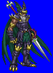
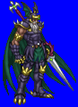
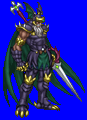
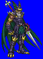

Height: ??? Weight: ???
Habitat: Asgard Origin: Europe
Meaning: Raging Man
Known as the All-Father, Odin is a chief god in scandinavian mythology. He serves as the god of intelligence, creativity, prosperity, weather, and death. Because Odin's eye entitles one to drink at the spring of intelligence, Odin often appears hooded in order to conceal his identity. He can change his form without limit using magic, but often appears as an older man with a mustache. Odin can use the holy spear "Gungnir" and rides the eight-legged horse "Slepnir".